Agreement, 25 pages
State health and safety training contract, July 1989 – June 1990
July 1, 1989 – June 30, 1990
The second-year contract with the Department of Labor's Occupational Safety and Health Training and Education Program, for $43,024.98. The narrative plans two conferences on the hazards of video display terminals and cleaning chemicals, health and safety committees with UAW Locals 1326 (Pall Trinity) and 802 (Monarch Machine Tool), and surveys of UAW Local 2300 dining workers at Cornell and Teamsters Local 65 cement workers. The file includes the signature sheet, notarized acknowledgment, basic agreement, budget summary and justification for three part-time staff, the state's general terms and conditions, and Appendix A, the standard clauses for state contracts.
A second photograph of one page of the terms and conditions is not shown. The detailed budget page listing each position's pay rate is withheld.
Download or cite this itemPages

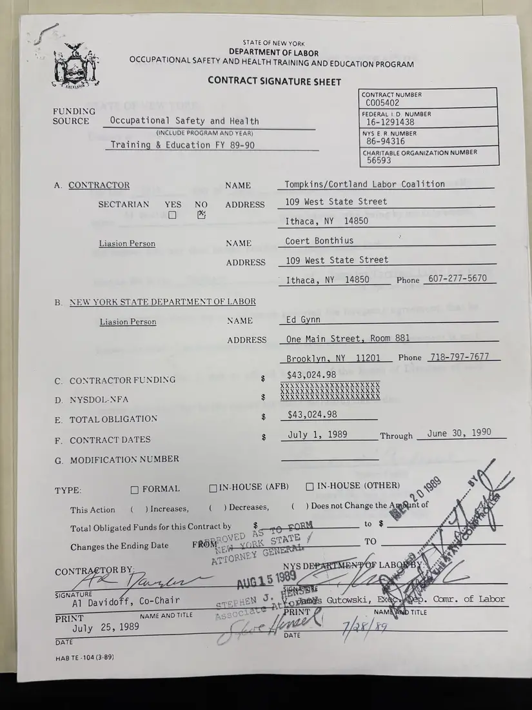
(open zoom view)Read the page text (machine-read, contains errors)
This text was generated automatically from the photograph and has not been corrected. The image is the authoritative record.
STATE OF NEW YORK
DEPARTMENT OF LABOR
OCCUPATIONAL SAFETY AND HEALTH TRAINING AND EDUCATION PROGRAM
CONTRACT SIGNATURE SHEET
CONTRACT NUMBER
FUNDING eee
SOURCE Occupational Safety and Health 16-1291438
(INCLUDE PROGRAM AND YEAR) NYS E.R. NUMBER
Training & Education FY 89-90 86-94316
CHARITABLE ORGANIZATION NUMBER
56593
A. CONTRACTOR NAME Tompkins/Cortland Labor Coalition
SECTARIAN YES NO ADDRESS _ 109 West State Street
O tas
Ithaca, NY 14850
Liasion Person NAME Coert Bonthius
ADDRESS 109 West State Street
’ Ithaca, NY 14850 Phone 607-277-5670
B. NEW YORK STATE DEPARTMENT OF LABOR
. Liasion Person NAME Ed Gynn
ADDRESS One Main Street, Room 881
Brooklyn, NY 11201 Phone _718-797-7677
C. CONTRACTOR FUNDING g _ $43,024.98
XXAXAXKNARKRRARKKERKA
XXXXEXXXXXXXXXXAXKAR
D. NYSDOL-NFA $ XXXXXXXXXXXXXXXXXXXX
E. TOTAL OBLIGATION $ $43,024.98
F. CONTRACT DATES $ July 1, 1989 Through __June 30, 1990
P| G. MODIFICATION NUMBER
{ TYPE: (J FORMAL (JIN-HOUSE (AFB) (J IN-HOUSE (OTHER) oe % \ a,
V 4. Ve
| This Action ( ) Increases, (_ ) Decreases, () Does not Change the ASunt of SG
Total Obligated Funds for this Contract by iy “6 soRM to $ ca —— \
pe) 2 (y' J ED ad 5 & ri ra ey
Changes the Ending Date FROM: ee TAT ? TO :
CONTRA&TOR BY: NYS DEPARTMEN DOF LABOBBY\
On Le [ase —_ py 8 a hay
Sy Be AI
SIGNATURE Eis 5 is
a | Al Davidoff, Co-Chair ae ovam’s Gutowski, Exed>yaep. Comr. of Labor
PRINT NAME AND TITLE yn aQcrer™ , PRINT 4 _ NAMR\AND TITLE
Muty 25,1989 Le He off
ORTE iy, 7? DATE
HAB TE -104 (3-89)
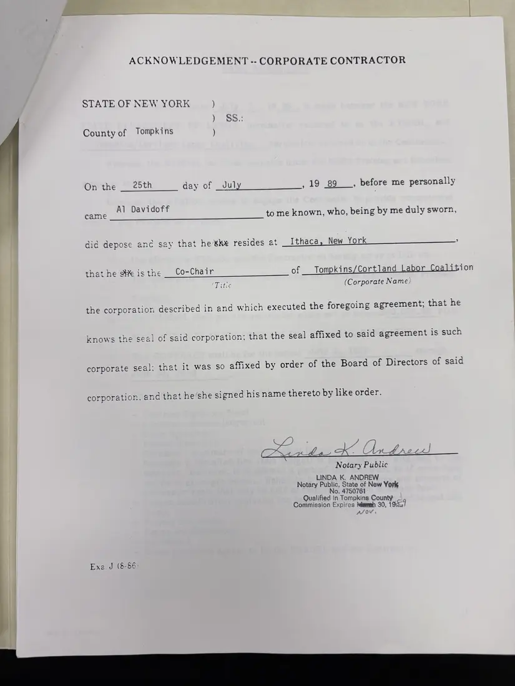
(open zoom view)Read the page text (machine-read, mostly readable)
This text was generated automatically from the photograph and has not been corrected. The image is the authoritative record.
ACKNOWLEDGEMENT -- CORPORATE CONTRACTOR STATE OF NEW YORK ) PSs County of Tompkins ) On the __ 25th day of _July , 19 89 _, before me personally Al Davidoff came aN oe to me known, who, being by me duly sworn, did depose anc say that he’Ske resides at _Ithaca, New York hat he #% isthe _ Co-Chair of __Tompkins/Cortland Labor Coa ition Titic (Corporate Name) the corporation described in and which executed the foregoing agreement; that he knows the seal of said corporation; that the seal affixed to said agreement is such corporate seal; that it was so affixed by order of the Board of Directors of said corporation. and that he’she signed his name thereto by like order. Notary Public LINDA K. ANDREW Notary Public, State of New York No. 4750761 Qualified in Tompkins ene ee Commission Expires or ay Exe. J (8-86

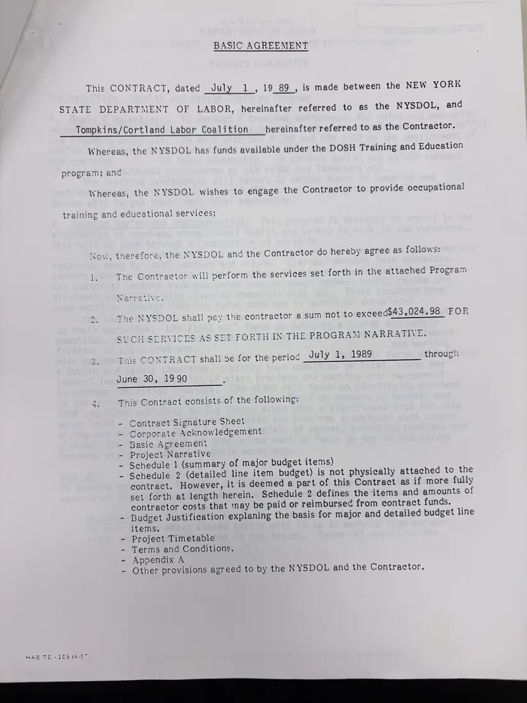
(open zoom view)Read the page text (machine-read, mostly readable)
This text was generated automatically from the photograph and has not been corrected. The image is the authoritative record.
BASIC AGREEMENT This CONTRACT, dated July 1, 19 89, is made between the NEW YORK STATE DEPARTMENT OF LABOR, hereinafter referred to as the NYSDOL, and Tompkins/Cortland Labor Coalition hereinafter referred to as the Contractor. Whereas, the NYSDOL has funds available under the DOSH Training and Education program}; anc Whereas, the NYSDOL wishes to engage the Contractor to provide occupational training and educational services; Now, therefore, the NYSDOL and the Contractor do hereby agree as follows: 1. The Contractor will perform the services set forth in the attached Program The NYSDOL shall pay the contractor a sum not to exceedd43,024.98 FOR Sie GHise Rid © ESWAS Sade RORMHAN THE PROGRAM NARRATIVE. 3. This CONTRACT shall be for the perioc July 1, 1989 through June 30, 1990 This Contract consists of the following: res - Contract Signature Sheet - Corporate Acknowledgement - Basic Agreement - Project Narrative - Schedule 1 (summary of major budget items) - Schedule 2 (detailed line item budget) is not physically attached to the contract. However, it is deemed a part of this Contract as if more fully set forth at length herein. Schedule 2 defines the items and amounts of contractor costs that nay be paid or reimbursed from contract funds. - Budget Justification explaning the basis for major and detailed budget line items. - Project Timetable - Terms and Conditions. - Appendix A - Other provisions agreed to by the NYSDOL and the Contractor. HAE TE -105 (4-€7:

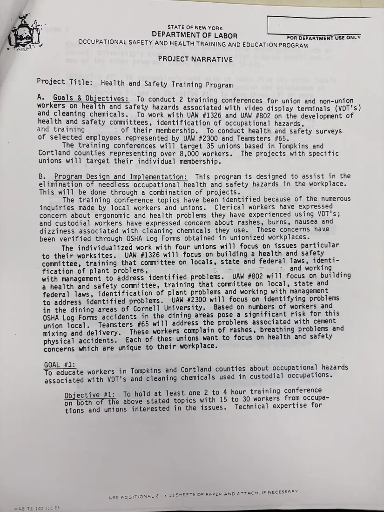
(open zoom view)Read the page text (machine-read, mostly readable)
This text was generated automatically from the photograph and has not been corrected. The image is the authoritative record.
ee STATE OF NEW YORK PARTMENT OF LABOR FOR D OCCUPATIONAL SAFETY AND HEALTH TRAINING AND EDUCATION ERCCREN a ee ee PROJECT NARRATIVE Project Title: Health and Safety Training Program A. j i Hy i i Goals & Objectives: To conduct 2 training conferences for union and non-union workers on health and safety hazards associated with video di n o displa i : Felt eee To work with UAW #1326 and UAW #802 gga ae se aa ety committees, identification of occupational hazards, ic g of their membership. To conduct health and safety surveys of selected employees represented by UAW #2300 and Teamsters #65. The training conferences will target 35 unions based in Tompkins and Cortland counties representing over 8,000 worker j i ifi ‘ : : ’ s. The projects with s 5 unions will target their individual membership. ere ate B. Program Design and Implementation: This program is designed to assist in the elimination of needless occupational health and safety hazards in the workplace. This will be done through a combination of projects. : The training conference topics have been identified because of the numerous inquiries made by local workers and unions. Clerical workers have expressed concern about ergonomic and health problems they have experienced using VDT's; and custodial workers have expressed concern about rashes, burns, nausea and dizziness associated with cleaning chemicals they use. These concerns have been verified through OSHA Log Forms obtained in unionized workplaces. The individualized work with four unions will focus on issues particular to their worksites. UAW #1326 will focus on building a health and safety committee, training that committee on locals, state and federal laws, identi- fication of plant problems, - ; oar ey ak -. and working with management to address identified problems. UAW #802 will focus on building a health and safety committee, training that committee on local, state and federal laws, identification of plant problems and working with management to address identified problems. UAW #2300 will focus on identifying problems in the dining areas of Cornel] University. Based on numbers of workers and OSHA Log Forms accidents in the dining areas pose a significant risk for this union local. Teamsters #65 will address the problems associated with cement mixing and delivery. These workers complain of rashes, breathing problems and physical accidents. Each of thes unions want to focus on health and safety concerns which are unique to their workplace. GOAL #1: To educate workers in Tompkins and Cortland counties about occupational hazards associated with VDT's and cleaning chemicals used in custodial occupations. Objective #1: To hold at least one 2 to 4 hour training conference on both of the above stated topics with 15 to 30 workers from occupa- tions and unions interested in the issues. Technical expertise for Yee AODITIONG: €- 2 2) SREEMaORPEeSR AND LTTACH, IF NECESSARY mE TE 102 (35°! Ei,

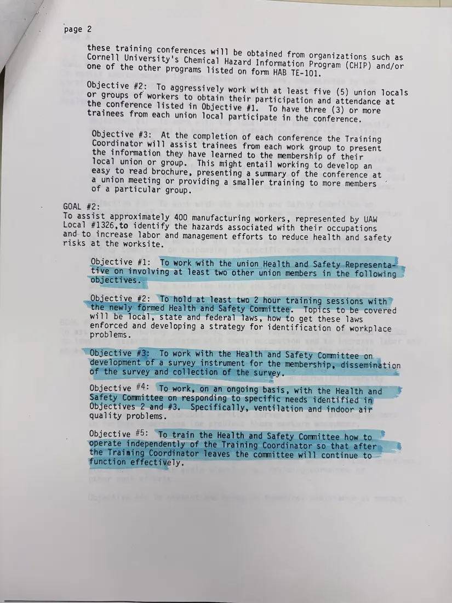
(open zoom view)Read the page text (machine-read, mostly readable)
This text was generated automatically from the photograph and has not been corrected. The image is the authoritative record.
page 2 these training conferences Will be obtained from Organizations such as Cornel] University's Chemical Hazard Information Program CHIP) and/or One of the other Programs listed on form HAB TE-101.. Objective #2: To aggressively work with at least five (5) union locals Or groups of workers to obtain their participation and attendance at the conference listed in Objective #1. To have three (3) or more trainees from each union local participate in the conference. Objective #3: At the completion of each conference the Training Coordinator will assist trainees from each work group to present the information they have learned to the membership of their local union or group. This might entail working to develop an €asy to read brochure, presenting a summary of the conference at a union meeting or Providing a smaller training to more members of a particular group. GOAL #2: To assist approximately 400 manufacturing workers, represented by UAW Local #1326,to identify the hazards associated with their occupations and-to increase labor and management efforts to reduce health and safety risks at the worksite. Objective #1; 0 get these laws ification of workplace aT et enforced and developing a strategy for ident problems.

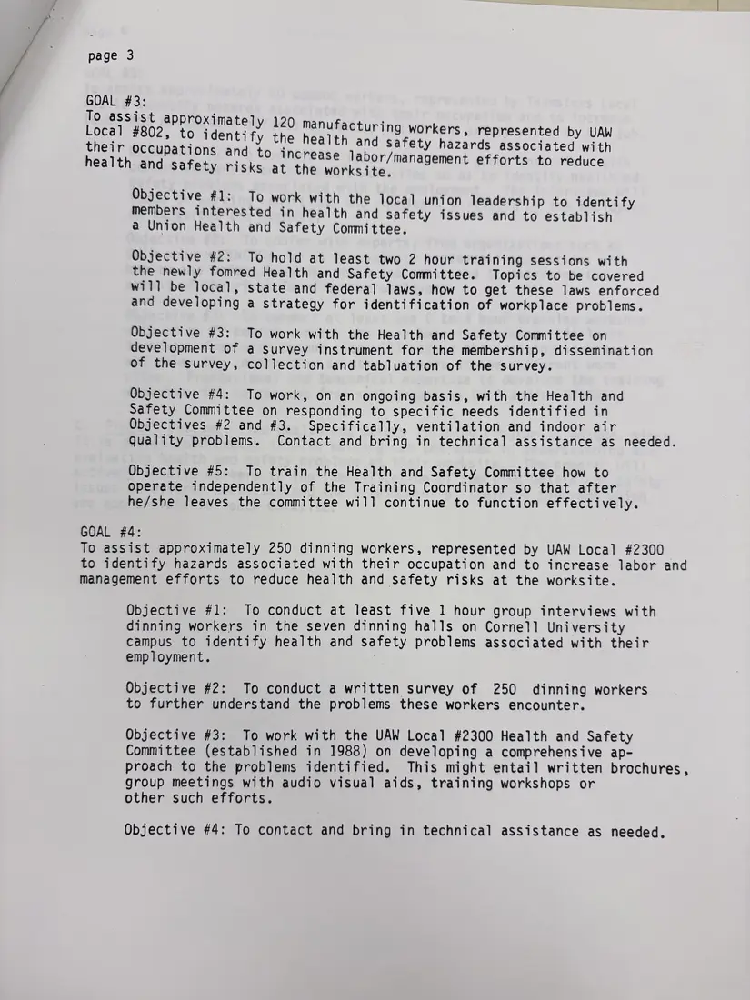
(open zoom view)Read the page text (machine-read, mostly readable)
This text was generated automatically from the photograph and has not been corrected. The image is the authoritative record.
page 3 GOAL #3: [een east eeainately 120 manufacturing workers, represented by UAW ree Bctunationss an, xo tnoreere nee safety hazards associated with se labor/ma health and Safety risks at the aah tcbes rar vane Objective #1: To work with the local union leadership to identify members interested in health and safety issues and to establish a Union Health and Safety Committee. Objective #2: To hold at least two 2 hour training sessions with the newly fomred Health and Safety Committee. Topics to be covered will be local, state and federal laws, how to get these laws enforced and developing a strategy for identification of workplace problems. Objective #3: To work with the Health and Safety Committee on development of a survey instrument for the membership, dissemination of the survey, collection and tabluation of the survey. Objective #4: To work, on an ongoing basis, with the Health and Safety Committee on responding to specific needs identified in Objectives #2 and #3. Specifically, ventilation and indoor air quality problems. Contact and bring in technical assistance as needed. Objective #5: To train the Health and Safety Committee how to operate independently of the Training Coordinator so that after he/she leaves the committee will continue to function effectively. GOAL #4: To assist approximately 250 dinning workers, represented by UAW Local #2300 to identify hazards associated with their occupation and to increase labor and management efforts to reduce health and safety risks at the worksite. Objective #1: To conduct at least five 1 hour group interviews with dinning workers in the seven dinning halls on Cornell University campus to identify health and safety problems associated with their employment. Objective #2: To conduct a written survey of 250 dinning workers to further understand the problems these workers encounter. Objective #3: To work with the UAW Local #2300 Health and Safety Committee (established in 1988) on developing a comprehensive ap- proach to the problems identified. This might entail written brochures, group meetings with audio visual aids, training workshops or other such efforts. Objective #4: To contact and bring in technical assistance as needed.

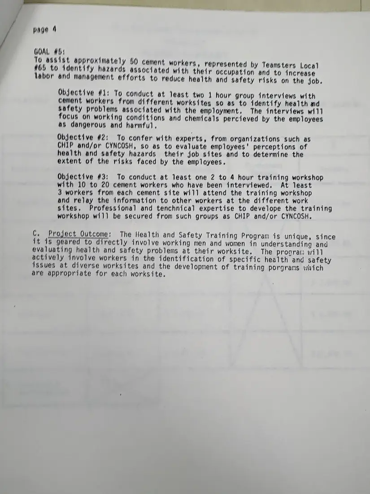
(open zoom view)Read the page text (machine-read, mostly readable)
This text was generated automatically from the photograph and has not been corrected. The image is the authoritative record.
page 4 GOAL #6: To assist approximately 60 cement workers represented by Teamsters ‘ ; ol érs Local #65 to identify hazards associated with their occupation and to increase labor and management efforts to reduce health and safety risks on the job. Objective #1: To conduct at least two 1 hour group interviews with cement workers from different worksites so as to identify health ad safety problems associated with the employment. The interviews will focus on working conditions and chemicals percieved by the employees as dangerous and harmful, Objective #2: To confer with experts, from organizations such as CHIP and/or CYNCOSH, So as to evaluate employees’ perceptions of health and safety hazards their job sites and to determine the extent of the risks faced by the employees. Objective #3: To conduct at least one 2 to 4 hour training workshop with 10 to 20 cement workers who have been interviewed. At least 3 workers from each cement site will attend the training workshop and relay the information to other workers at the different work sites. Professional and tenchnical expertise to develope the training workshop will be secured from such groups as CHIP and/or CYNCOSH. C. Project Outcome: The Health and Safety Training Program is unique, since it 1s geared to directly involve working men and women in understanding and ae Ng health and safety problems at their worksite, The prograr will actively involve workers in the identification of specific health and safety issues at diverse worksites and the development of training porgrams which aré appropriate for each worksite.

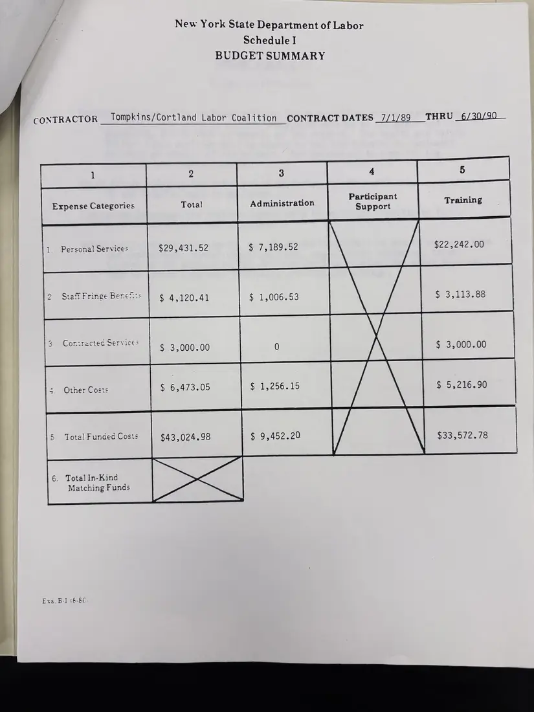
(open zoom view)Read the page text (machine-read, contains errors)
This text was generated automatically from the photograph and has not been corrected. The image is the authoritative record.
New York State Department of Labor Schedule I BUDGET SUMMARY CONTRACTOR Tompkins/Cortland Labor Coalition CONTRACT DATES 7/1/89 THRU _6/30/90 — Participant Expense Categories Support el es Administration 1. Personal Services SS Pollo $22,242.00 : $ 1,006.53 CSc le Gi: /\ $ 3,000.00 ol 2565 $43,024.98 $ 9,452.20 Conzrectec Services 4. Other Costs $ 5,216.90 Total Funded Costs $33,572.78 _ Total In-Kind Matching Funds Exe. B-] (6-80.

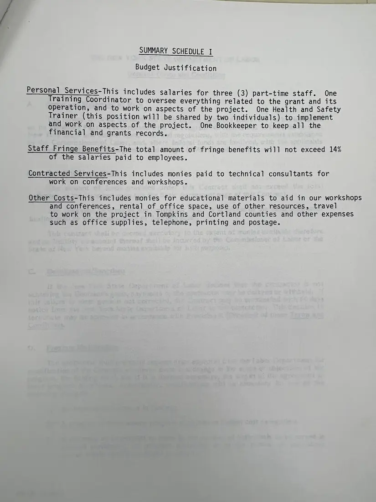
(open zoom view)Read the page text (machine-read, mostly readable)
This text was generated automatically from the photograph and has not been corrected. The image is the authoritative record.
SUMMARY SCHEDULE I Budget Justification Personal Services-This includes salaries for three (3) part-time staff. One Training Coordinator to oversee everything related to the grant and its operation, and to work on aspects of the project. One Health and Safety Trainer (this position will be shared by two individuals) to implement and work On aspects of the project. One Bookkeeper to keep all the financial and grants records. Staff Fringe Benefits-The total amount of fringe benefits will not exceed 14% of the salaries paid to employees. Contracted Services-This includes monies paid to technical consultants for work on conferences and workshops. Other Costs-This includes monies for educational materials to aid in our workshops and conferences, rental of office space, use of other resources, travel to work on the project in Tompkins and Cortland counties and other expenses such aS office supplies, telephone, printing and postage.

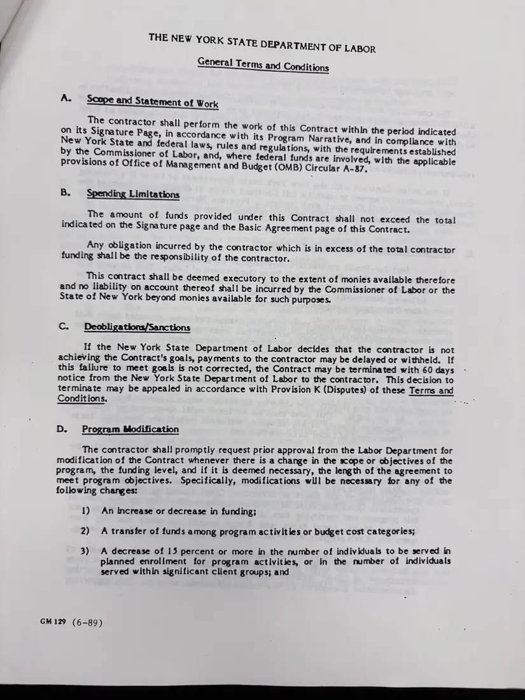
(open zoom view)Read the page text (machine-read, mostly readable)
This text was generated automatically from the photograph and has not been corrected. The image is the authoritative record.
THE NEW YORK STATE DEPARTMENT OF LABOR General Terms and Conditions General Terms and Conditions A. and Statement of Work es i ccc shall perform the work of this S signature Page, in accordance with its Pr i i ogram Narrative, and in compliance with New York State and federal laws, rules and regulations, with the requirements established by the Commissioner of Labor, and where fede ; ral funds are invol Provisions of Office of Management and Budget (OMB) Circular Aa. phi eta B. Spending Limitations ry The amount of funds provided under this Contract shall not exceed the total indicated on the Signature page and the Basic Agreement page of this Contract. Contract within the period indicated ‘ Any obligation incurred by the contractor which is in excess of the total contractor funding shall be the responsibility of the contractor. This contract shall be deemed executory to the extent of monies available therefore and no liability on account thereof shall be incurred by the Commissioner of Labor or the State of New York beyond monies available for such purposes. C. Deobligations/Sanctions If the New York State Department of Labor decides that the contractor is not _ achieving the Contract's goals, payments to the contractor may be delayed or withheld. If this failure to meet goals is not corrected, the Contract may be terminated with 60 days notice from the New York State Department of Labor to the contractor. This decision to terminate may be appealed in accordance with Provision K (Disputes) of these Terms and Conditions. a D. Program Modification The contractor shall promptly request prior approval from the Labor Department for modification of the Contract whenever there is a change in the scope or objectives of the program, the funding level, and if it is deemed necessary, the length of the agreement to meet program objectives. Specifically, modifications will be necessary for any of the following changes: 1) An increase or decrease in funding; 2) A transfer of funds among program activities or budget cost categories; 3) A decrease of 15 percent or more in the number of individuals to be served in planned enroliment for program activities, or in the number of individuals served within significant client groups; and GM 129 (6-89)

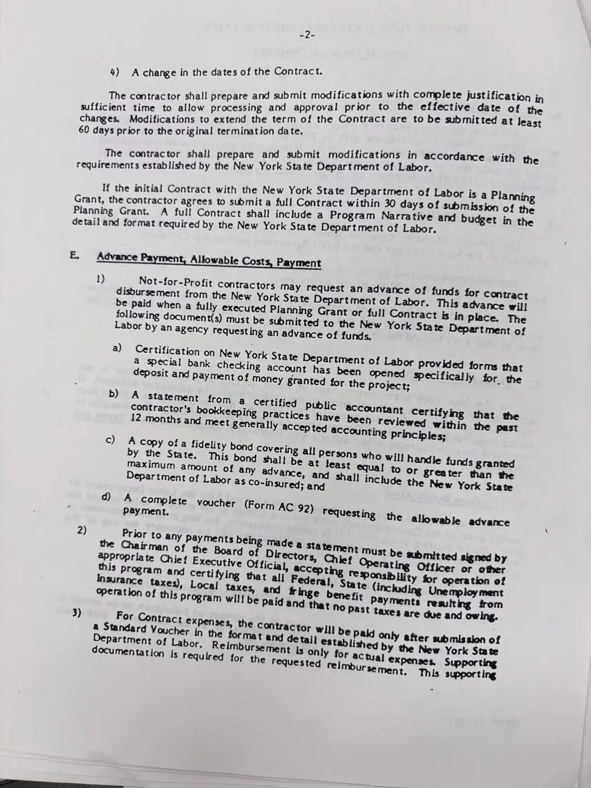
(open zoom view)Read the page text (machine-read, mostly readable)
This text was generated automatically from the photograph and has not been corrected. The image is the authoritative record.
=2s 4) A change in the dates of the Contract. Th tractor shall prepare and submit modifications with complete justification in e contracto me to allow pr rov i ive te of the sufficient t t i l prior to the effective da ici i Ilo ocessing and approva ; charge Modifications to extend the term of the Contract are to be submitted at least 60 days prior to the original termination date. The contractor shall prepare and submit modifications in accordance with the requirements established by the New York State Department of Labor. initi ith the New York State Department of Labor is a Planning If the initial Contract wi Sey Ghia dest pee ing ntractor agrees to submit a full Contr. f Pink peel A full Contract shall include a Program Narrative and budget in the Planning Grant. detail ane format required by the New York State Depart ment of Labor. E. Advance Payment, Allowable Costs, Payment y request an advance of funds for contract 1) Not-for-Profit contractors ma disbursement from the New York State Department of Labor. This advance will anning Grant or full Contract is in Place. The be paid when a fully executed P! following document(s) must be submitted to the New York State Department of Labor by an agency requesting an advance of funds. Certification on New York State Department of Labor Provided forms that a special bank checking account has been opened Specifically for the deposit and payment of money granted for. the Project; b) A Statement from a Certified public accountant certi a d tif that the contractor's bookkeeping Practices have been reviewed snes, the past 12 months and meet Benerally accepted accounting Principles; c) A copy ofa fidelity bond covering all persons who ) willh by the State. This bond shal! be at least equal to GP greene seater maximum. amount of any advance, and shall include the New York State Department of Labor 4S Co-insured; and : d) A complet h : tne linr 520 EOF sanece ne 32) requesting the allowable advance 2) Prior to any Payments being made a sta teme the Chairman of the Board of Directors, Chie! Operating emnitted poppe ks appropriate Chief Executive Of ficial, accepting FESPonsbility fo : Sten of Hid eS oe resi ing that all Federal, State (including “py saphapelh xes), Loca taxes, and fringe bene fit \ operation of this Program will be paid anita no Warten gp ha 3) For Contract expenses, the contracto T will be paig § Stenderd Voucher in the format and detail ettab lished by ens ee emlssion of Partment of Labor. Reimbursement is only for actual ex ses. Supporting documentation js required for the requested reimbursement. This support ing

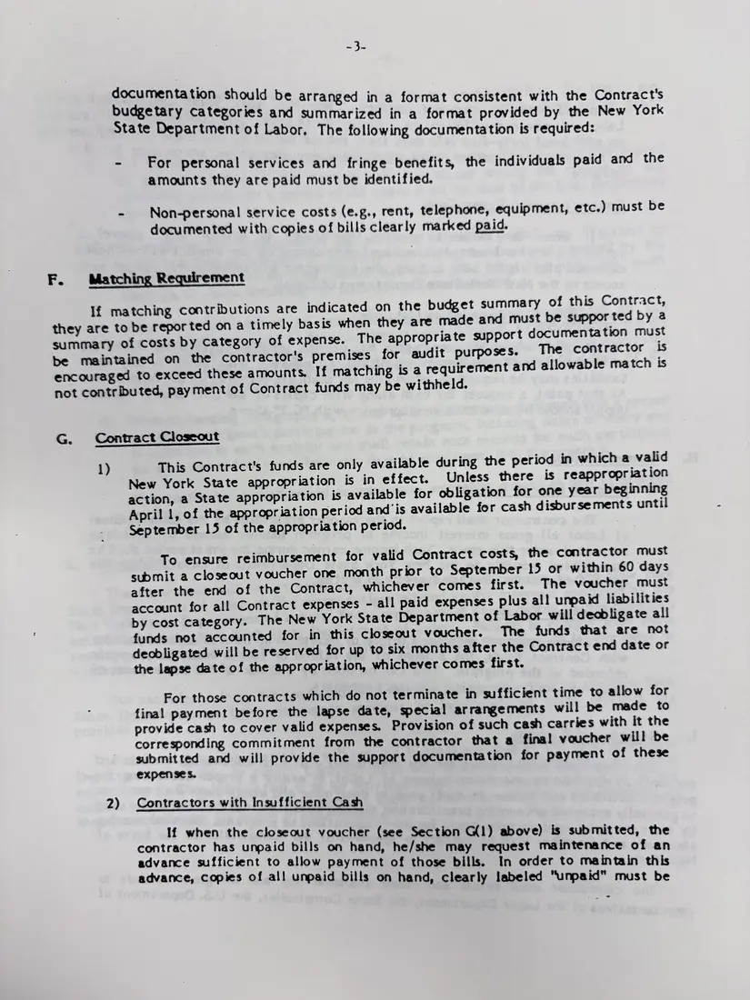
(open zoom view)Read the page text (machine-read, mostly readable)
This text was generated automatically from the photograph and has not been corrected. The image is the authoritative record.
Bae Sodetity eee should be arranged in a format consistent with the Contract's : ones Categories and summarized in a format provided by the New York e Department of Labor, The following documentation is required: - For personal services and fringe benefits, the individuals paid and the amounts they are paid must be identified. - Non-personal service costs (e.g., rent, telephone, equipment, etc.) must be documented with copies of bills clearly marked paid. F. Matching R ement If matching contributions are indicated on the budget summary of this Contract, they are to be reported on a timely basis when they are made and must be supported by a summary of costs by category of expense. The appropriate support documentation must be maintained on the contractor's premises for audit purposes. The contractor is encouraged to exceed these amounts. If matching is a requirement and allowable match is not contributed, payment of Contract funds may be withheld. G. Contract Closeout 1) This Contract's funds are only available during the period in which a valid New York State appropriation is in effect. Unless there is reappropriation action, a State appropriation is available for obligation for one year beginning April 1, of the appropriation period and‘is available for cash disbursements until September 15 of the appropriation period. To ensure reimbursement for valid Contract costs, the contractor must submit a closeout voucher one month prior to September 15 or within 60 days after the end of the Contract, whichever comes first. The voucher must account for all Contract expenses - all paid expenses plus all unpaid liabilities by cost category. The New York State Department of Labor will deobligate all funds not accounted for in this closeout voucher. The funds that are not deobligated will be reserved for up to six months after the Contract end date or the lapse date of the appropriation, whichever comes first. For those contracts which do not terminate ‘in sufficient time to allow for final payment before the lapse date, special arrangements will be made to provide cash to cover valid expenses. Provision of such cash carries with it the corresponding commitment from the contractor that a final voucher will be submitted and will provide the support documentation for payment of these expenses. 2) Contractors with Insufficient Cash If when the closeout voucher (see Section G1) above) is submitted, the contractor has unpaid bills on hand, he/she may request maintenance of an advance sufficient to allow payment of those bills. In order to maintain this advance, copies of al! unpaid bills on hand, clearly labeled "unpaid" must be

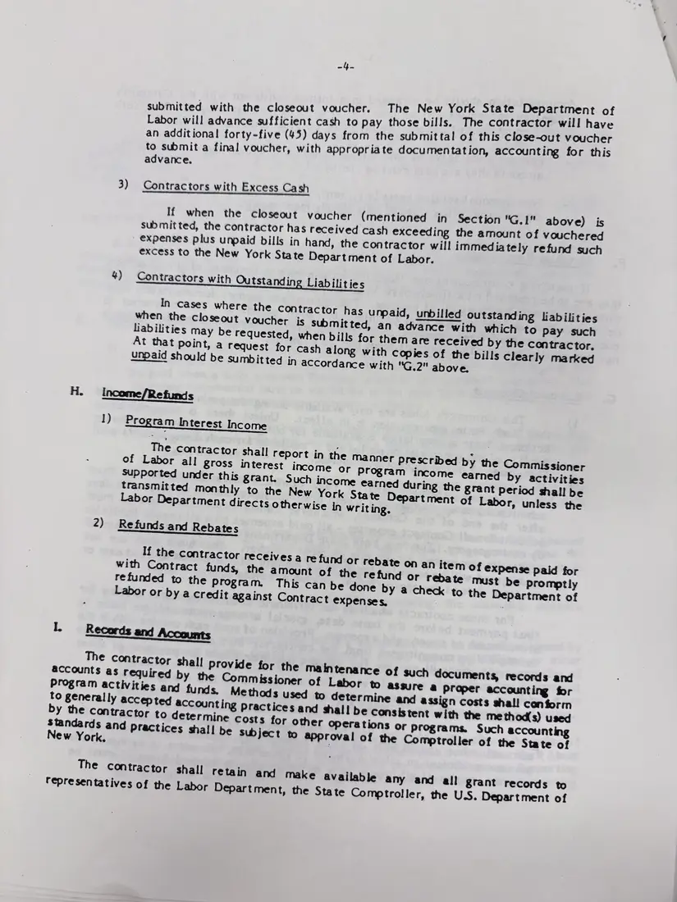
(open zoom view)Read the page text (machine-read, mostly readable)
This text was generated automatically from the photograph and has not been corrected. The image is the authoritative record.
submitted with the closeout voucher. The New York State Department of ici i tractor will have Labor will advance sufficient cash to pay those bills. The con an additional forty-five (45) days from the submittal of this close-out voucher to submit a final voucher, with appropriate documentation, accounting for this advance. 3) Contractors with Excess Cash ontractors with Excess Cash above) is If when the closeout voucher (mentioned in Section "G.1" ng the amount of vouchered submitted, the contractor has received cash exceedi expenses plus unpaid bills in hand, the contractor will immediately refund such excess to the New York State Depart ment of Labor. 4) Contractors with Outstanding Liabilities has unpaid, unbilled outstanding liabilities H. Income/Re funds 1) Program Interest Income The contractor shall report in the manner Prescribed by the Commissioner of Labor all Bross interest income or Program income earned by activities Supported under this grant. Such income earned during the grant Period shall be transmitted monthly to the New York State Department of Labor, unless the Labor Department directs otherwise in writ ing. 2) Refunds and Rebates —ccunds and Rebates L. Records and Accounts by the contractor to determine costs for other operati ‘ tons or programs. Such account Necmeee and practices shall be subject to ah ee of the one et ew York. : The contractor shall retain and make available any and all grant records to representatives of the Labor Department, the State Comptroller, the U.S. Department of

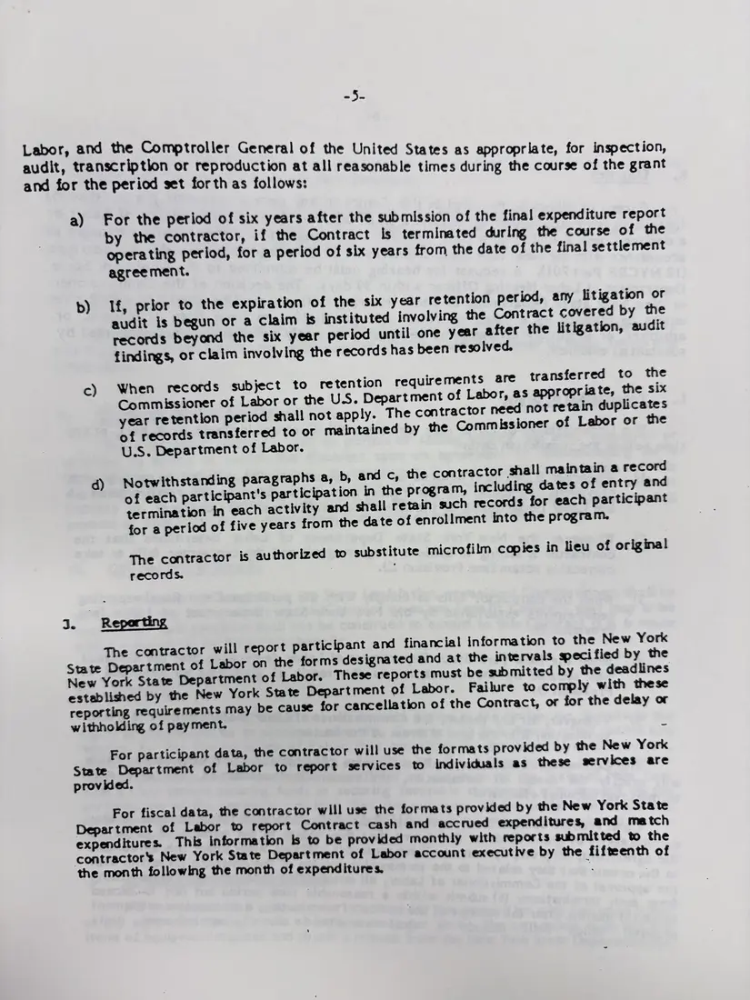
(open zoom view)Read the page text (machine-read, mostly readable)
This text was generated automatically from the photograph and has not been corrected. The image is the authoritative record.
358 Labor, and the Comptroller General of the United States as appropriate, for inspection, audit, transcription or reproduction at all reasonab| i : e ti and for the period set forth as follows: Mesiduring Me Coulee Eee a) For the period of six years after the submission of the final expenditure report by the contractor, if the Contract Is terminated during the course of the operating period, for a period of six years from the date of the final settlement agreement. b) If, prior to the expiration of the six year retention period, any litigation or audit is begun or a claim is instituted involving the Contract covered by the records beyond the six year period until one year after the litigation, audit findings, or claim involving the records has been resolved. c) When records subject to retention requirements are transferred to the Commissioner of Labor or the U.S. Department of Labor, as appropriate, the six year retention period shall not apply. The contractor need not retain duplicates of records transferred to or maintained by the Commissioner of Labor or the U.S. Department of Labor. d) Notwithstanding paragraphs a, b, and c, the contractor shall maintain a record of each participant's participation in the program, including dates of entry and termination in each activity and shall retain such records for each participant for a period of five years from the date of enrollment into the program. The contractor is authorized to substitute microfilm copies in lieu of original records. : J. Reporting The contractor will report participant and financial information to the New York State Department of Labor on the forms designated and at the intervals specified by the New York State Department of Labor. These reports must be submitted by the deadlines established by the New York State Department of Labor. Failure to comply with these reporting requirements may be cause for cancellation of the Contract, or for the delay or withholding of payment. For participant data, the contractor will use the formats provided by the New York Stagen Den FDO! of Labor to report services to individuals as these services are prov 5 For fiscal data, the contractor will use the formats provided by the New York State Department of Labor to report Con tract cash and accrued expenditures, and match expenditures. This information bs to ne be provided monthly with reports submitted to the contractor's New York State Department of Labor acc ount executive by the fi the month following the month of expenditures. y Ait of

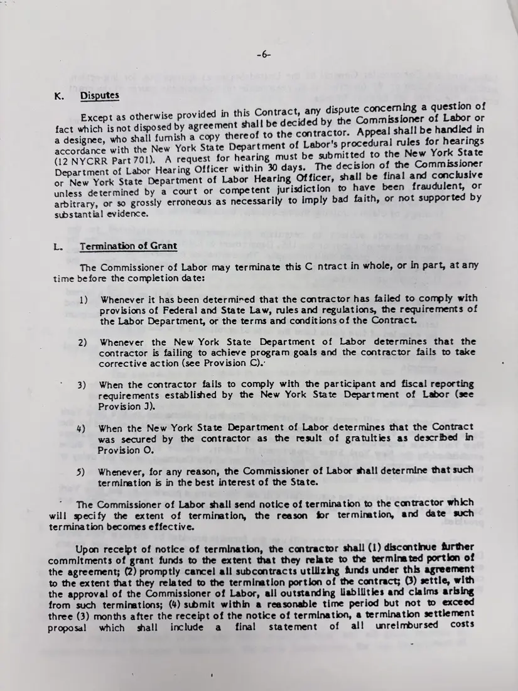
(open zoom view)Read the page text (machine-read, mostly readable)
This text was generated automatically from the photograph and has not been corrected. The image is the authoritative record.
K. Disputes oncerning a question of ided in this Contract, any dispute C heh AB Aad Med: Commissioner of Labor or Es t shall be decided by the ; fact which is not disposed by agresmens ate to the contractor. Appeal shall be handled in designee, who shall furnish a copy thereof accor with the New York State Department of Labor's eoerg nee 7 bees X st for hearing must be submitted to the New York state HA ES Sp aghne yh é The decision of the Commssioner Department of Labor Hearing Officer within 30 days. mp ot York State Department of Labor Hearing Officer, shall be final and conclusive unless determined by a court or competent jurisdiction to have been fraudulent, or arbitrary, or so grossly erroneous as necessarily to imply bad faith, or not supported by substantial evidence. Except as otherwise prov L. Termination of Grant The Commissioner of Labor may terminate this C ntract in whole, or in part, at any time before the completion date: 1) Whenever it has been determired that the contractor has failed to comply with provisions of Federal and State Law, rules and regulations, the requirements of the Labor Department, or the terms and conditions of the Contract. 2) Whenever the New York State Department of Labor determines that the contractor is failing to achieve program goals and the contractor fails to take corrective action (see Provision C).: When the contractor fails to comply with the participant and fiscal reporting requirements established by the New York State Department of Labor (see Provision J). 4) When the New York State Department of Labor determines that the Contract was secured by the contractor as the result of gratulties as described in Provision O. 5) Whenever, for any reason, the Commissioner of Labor shall determine that such termination is in the best interest of the State. The Commissioner of Labor shall send notice of termination to the contractor which will specify the extent of termination, the reason for termination, and date such termination becomes effective. Upon receipt of notice of termination, the contractor shall (1) discontinue further commitments of grant funds to the extent that they relate to the terminated portion of the agreement; (2) promptly cancel all subcontracts utliizing funds under this agreement to the extent that they related to the termination portion of the contract; (3) settle, with the approval of the Commissioner of Labor, all outstanding liabilities and clalms arising from such terminations; (4) submit within a reasonable time period but not to exceed three (3) months after the receipt of the notice of termination, a termination settlement proposal which shall include a _ final statement of all umreimbursed costs

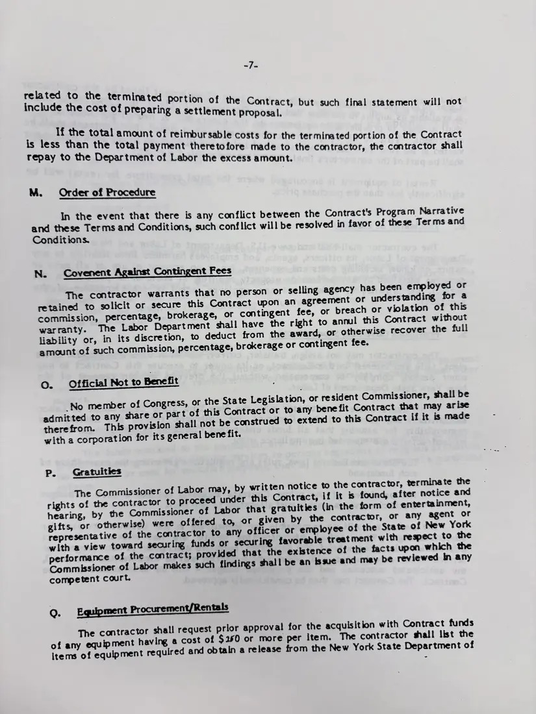
(open zoom view)Read the page text (machine-read, mostly readable)
This text was generated automatically from the photograph and has not been corrected. The image is the authoritative record.
aJé related to the terminated portion of th include the cost of Preparing a deVtivantwvopouet SUC Ste ee a anes If the total ; amount of reimbursable costs for the terminated portion of the Contract is less than the total payment thereto fore repay to the Department of Labor the cant emoone tiescontiactorn Ne, SSE ston M. Order of Procedure In the event that there is any conflict between th and these Terms and Conditions, such conflict will be reso Conditions. e Contract's Program Narrative Ived in favor of these Terms and N. Covenent Against Contingent Fees The contractor warrants that no person or selling agency has been employed or retained to solicit or secure this Contract upon an agreement or understanding for a commission, percentage, brokerage, or contingent fee, or breach or violation of this warranty. The Labor Department shall have the right to annul this Contract without liability or, in its discretion, to deduct from the award, or otherwise recover the full amount of such commission, percentage, brokerage or contingent fee. ©. _ Official Not to Benefit _No member of Congress, or the State Legislation, or resident Commissioner, shall be admitted to any share or part of this Contract or to any benefit Contract that may arise therefrom. This provision shall not be construed to extend to this Contract if it is made with a corporation for its general bene fit. P. Gratuities The Commissioner of Labor may, by written notice to the contractor, terminate the rights of the contractor to proceed under this Contract, if it is found, after notice and hearing, by the Commissioner of Labor that gratuities (in the form of entertainment, gifts, or otherwise) were offered to, or given by the contractor, oF any agent or representative of the contractor to any officer or employee of the State of New York with a view toward securing funds or securing favorable treatment with respect to the performance of the contract; provided that the existence of the facts upon which the Commissioner of Labor makes such findings shall be an tssue and may be reviewed in any competent court. Q. Equipment Procurement/Rentals The contractor shall request prior approval for the acquisition with Contract funds of any equipment having a cost of $260 or more per Item. The contractor shall list the items of equipment required and obtain a release from the New York State Department of

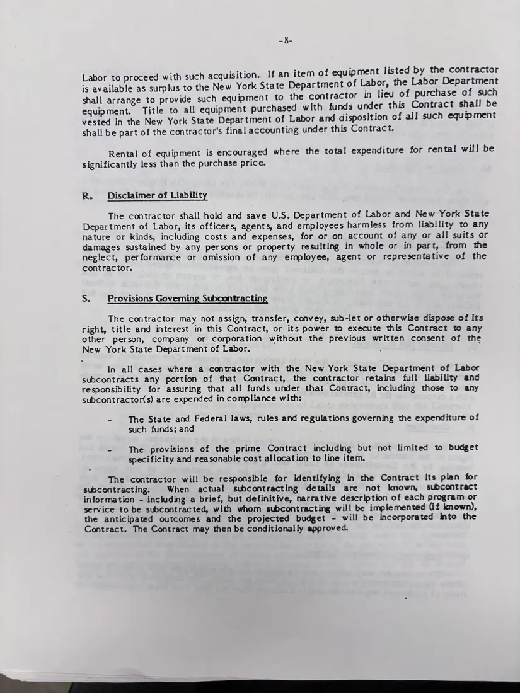
(open zoom view)Read the page text (machine-read, mostly readable)
This text was generated automatically from the photograph and has not been corrected. The image is the authoritative record.
If an item of equipment listed by the contractor is available as surplus to the New York State Department of Labor, the Labor Department shall arrange to provide such equipment to the contractor in lieu of purchase of such equipment. Title to all equipment purchased with funds under this Contract shall be vested in the New York State Department of Labor and disposition of all such equipment shall be part of the contractor's final accounting under this Contract. Labor to proceed with such acquisition. Rental of equipment is encouraged where the total expenditure for rental will be significantly less than the purchase price. R. Disclaimer of Liability The contractor shall hold and save U.S. Department of Labor and New York State Department of Labor, its officers, agents, and employees harmless from liability to any nature or kinds, including costs and expenses, for or on account of any or all suits or damages sustained by any persons or property resulting in whole or in part, from the neglect, performance or omission of any employee, agent or representative of the contractor. S: Provisions Governing Subcontracting The contractor may not assign, transfer, convey, sub-let or otherwise dispose of its right, title and interest in this Contract, or its power to execute this Contract to any other person, company or corporation without the previous written consent of the New York State Department of Labor. ~ : In all cases where a contractor with the New York State Department of Labor subcontracts any portion of that Contract, the contractor retains full lability and responsibility for assuring that all funds under that Contract, including those to any subcontractor(s) are expended in compliance with: The State and Federal laws, rules and regulations governing the expenditure of such funds; and ' The provisions of the prime Contract including but not limited to budget specificity and reasonable cost allocation to line item. The contractor will be responsible for identifying in the Contract Its plan for subcontracting. | When actual subcontracting details are not known, subcontract information - including a brief, but definitive, narrative description of each program or service to be subcontracted, with whom subcontracting will be implemented (if known), the anticipated outcomes and the projected budget - will be incorporated into the Contract. The Contract may then be conditionally approved.

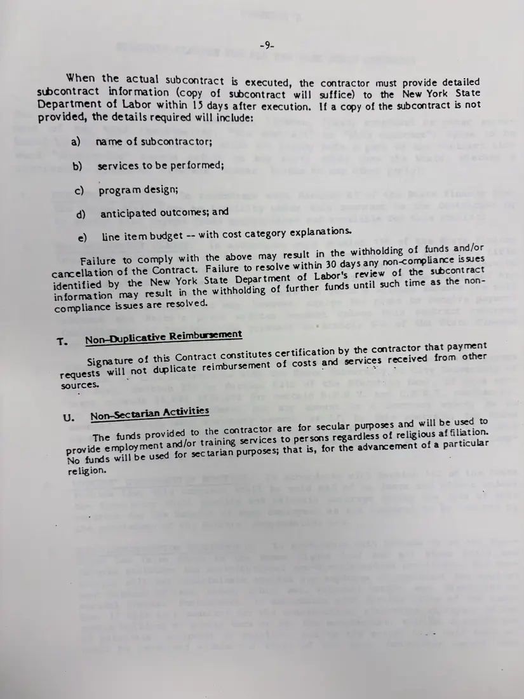
(open zoom view)Read the page text (machine-read, mostly readable)
This text was generated automatically from the photograph and has not been corrected. The image is the authoritative record.
When the act ual subcon : subcontract information (c uh Ils executed, the contractor must provide detailed opy of subcontract will suffice) to the New York State Department of Labor withi : ithin 15 da ecuti provided, the details required will i We oe ee, a) name of subcontractor; b) services to be performed; c) program design; d) anticipated outcomes; and line item budget -- with cost category explanations. Failure to comply with the above may result in the withholding of funds and/or cancellation of the Contract. Failure to resolve within 30 days any non-compliance issues identified by the New York State Department of Labor's review of the subcontract information may result in the withholding of further funds until such time as the non- compliance issues are resolved. T. Non-Duplicative Reimbursement Signature of this Contract constitutes certification by the cont requests will not duplicate reimbursement of costs and services r sources. E ractor that payment eceived from other U. _Non-Sectarian Activities The funds provided to the contractor are for secular purposes and will be used to provide employment and/or training services to persons regardless of religious af filiation. No funds will be used for sectarian purposes; that is, for the advancement of a particular religion.

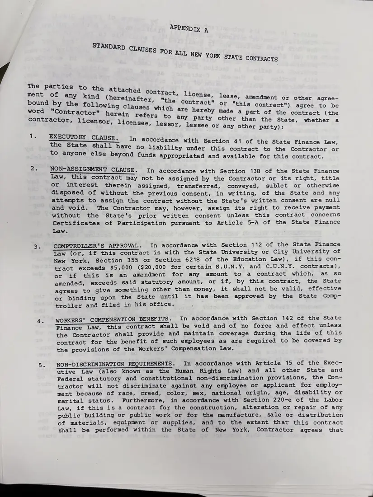
(open zoom view)Read the page text (machine-read, mostly readable)
This text was generated automatically from the photograph and has not been corrected. The image is the authoritative record.
APPEND IX A STANDARD CL AUSES FOR ALL NEW YORK STATE CONTRAC + license, lease Nthe. contract » amendment or other agree- or "this contract") " ich agree to be word "Contractor" herein refers are hereby made a part of the contract (the contractor, licensor, li soapy Party other than the state, wh ; cens ' ether a ‘ ee, lessor, lessee or any other party): Hie EXECUTO RY She “Statensha li.) Ss In accordance with Section 41 of the State Finance Law, ea. bre cise. ave no liability under this contract to the Contractor or e beyond funds appropriated and available for this contract. Ze NONTASSIGNMENT CLAUSE. In accordance with Section 138 of the State Finance ae this contract May not be assigned by the Contractor or its right, title ox, interest therein assigned, transferred, conveyed, sublet or otherwise disposed of without the previous consent, in writing, of the State and any attempts to assign the contract without the State's written consent are null and void. The Contractor may, however, assign its right to receive payment without the State's prior written consent unless this contract concerns Certificates of Participation pursuant to Article 5-A of the State Finance Law. 3 COMPTROLLER'S APPROVAL. In accordance with Section 112 of the State Finance Law (or, if this contract is with the State University or City University of New York, Section 355 or Section 6218 of the Education Law), tf thes con— tract exceeds $5,000 ($20,000 for certain S.U.N.¥. and C.U.N.Y. contracts), or if this is an amendment for any amount to a contract which, as so amended, exceeds said statutory amount, or Lf, “by .this, contract, the State agrees to give something other than money, it shall not be valid, effective or binding upon the State until it has been approved by the State Comp- troller and filed in his office. s\n WORKERS' COMPENSATION BENEFITS. In accordance with Section 142 of the State Finance Law, this contract shall be void and of no force and effect unless the Contractor shall provide and maintain coverage during the life of this contract for the benefit of such employees as are required to be covered by the provisions of the Workers' Compensation Law. Ze NON-DISCRIMINATION REQUIREMENTS. In accordance with Article 15 of the Exec- utive Law (also known as the Human Rights Law) and all other State and Federal statutory and constitutional non-discrimination provisions, the Con- tractor will not discriminate against any employee or applicant for employ- ment because of race, creed, color, sex, national origin, age, disability or marital status. Furthermre, in accordance with Section 220-e of the Labor Law, if this is a contract for the construction, alteration or repair of any public building or public work or for the manufacture, sale or distribution of materials, equipment or supplies, and to the extent that this contract shall be performed within the State of New York, Contractor agrees that "Sl

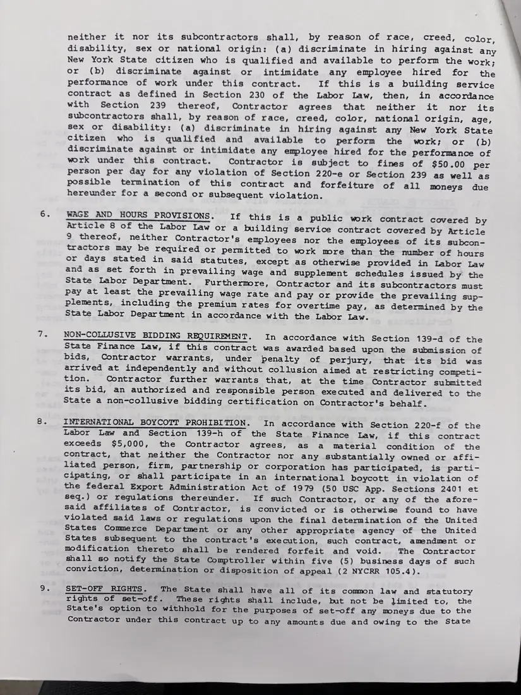
(open zoom view)Read the page text (machine-read, mostly readable)
This text was generated automatically from the photograph and has not been corrected. The image is the authoritative record.
neither it nor its subcontractors shall, by reason of race, creed, color, disability, sex or national origin: (a) discriminate in hiring against any New York State citizen who is qualified and available to perform the work; or (b) discriminate against or intimidate any employee hired for the performance of work under this contract. If this is a building service contract as defined in Section 230 of the Labor Law, then, in accordance with Section 239 thereof, Contractor agrees that neither it nor its subcontractors shall, by reason of race, creed, color, national origin, age, sex or disability: (a) discriminate in hiring against any New York State citizen who is qualified and available to perform the work; or (b) discriminate against or intimidate any employee hired for the performance of work under this contract. Contractor is subject to fines of $50.00 per person per day for any violation of Section 220-e or Section 239 as well as possible termination of this contract and forfeiture of all moneys due hereunder for a second or subsequent violation. WAGE AND HOURS PROVISIONS. If this is a public work contract covered by Article 8 of the Labor Law or a building service contract covered by Article 9 thereof, neither Contractor's employees nor the employees of its subcon- tractors may be required or permitted to work mre than the number of hours or days stated in said statutes, except as otherwise provided in Labor Law and as set forth in prevailing wage and supplement schedules issued by the State Labor Department. Furthermore, Contractor and its subcontractors must pay at least the prevailing wage rate and pay or provide the prevailing sup- plements, including the premium rates for Overtime pay, as determined by the State Labor Department in accordance with the Labor Law. NON-COLLUSIVE BIDDING REQUIREMENT. In accordance with Section 139-d of the State Finance Law, if this contract was awarded based upon the submission of bids, Contractor warrants, under penalty of perjury, that its bid was arrived at independently and without collusion aimed at restricting competi- tion. Contractor further warrants that, at the time Contractor submitted its bid, an authorized and responsible person executed and delivered to the State a non-collusive bidding certification on Contractor's behalf. INTERNATIONAL BOYCOTT PROHIBITION. In accordance with Section 220-f of the Labor Law and Section 139-h of the State Finance Law, if this contract exceeds $5,000, the Contractor agrees, as a material condition of the contract, that neither the Contractor nor any substantially owned or affi- liated person, firm, partnership or corporation has participated, is parti- cipating, or shall participate in an international boycott in violation of the federal Export Administration Act of 1979 (50 USC App. Sections 2401 et seq.) or regulations thereunder. If such Contractor, or any of the afore- said affiliates of Contractor, is convicted or is otherwise found to have violated said laws or regulations upon the final determination of the United States Commerce Department or any other appropriate agency of the United States subsequent to the contract's execution, such contract, amendment or modification thereto shall be rendered forfeit and void. The Contractor shall so notify the State Comptroller within five (5) business days of such conviction, determination or disposition of appeal (2 NYCRR 105.4). SET-OFF RIGHTS. The State shall have all of its common law and statutory rights of set-off. These rights shall include, but not be limited to, the State's option to withhold for the purposes of set-off any moneys due to the Contractor under this contract up to any amounts due and owing to the State

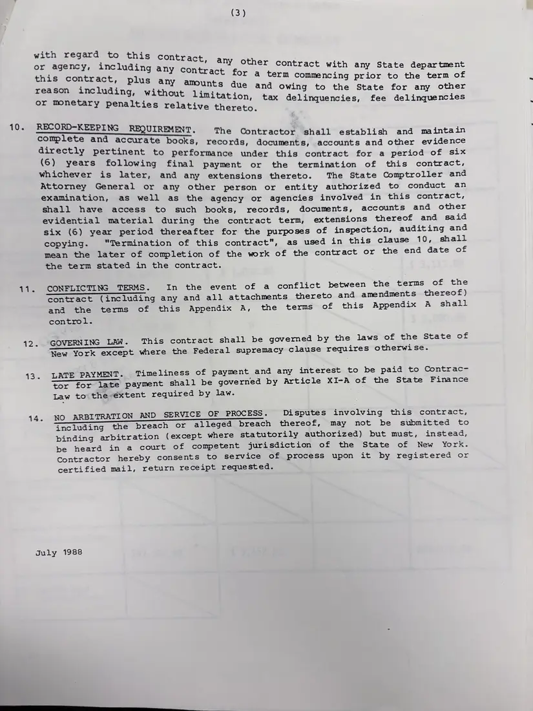
(open zoom view)Read the page text (machine-read, mostly readable)
This text was generated automatically from the photograph and has not been corrected. The image is the authoritative record.
10. 12. a3— 14. RECORD-KEEPING REQUIREMENT, with regard to this contract or agency, including any c this contract, Mh The Contract hal ; complete and or shall establish and maintain accurate books, records, documents, accounts and other evidence direct (6) ert ae ghee eae ance under this contract for a period of six Reece 8 lat payment or the termination of this contract, ater, and any extensions thereto. The State Comptroller and Attorney General or any other person or entity authorized to conduct an examination, as well as the agency or agencies involved in this contract, shall have access to such books, records, documents, accounts and other evidential material during the contract term, extensions thereof and said six (6) year period thereafter for the purposes of inspection, auditing and copying. “Termination of this contract", as used in this clause 10, shall mean the later of completion of the work of the contract or the end date of the term stated in the contract. CONFLICTING TERMS. In the event of a conflict between the terms of the contract (including any and all attachments thereto and amendments thereof) and the terms of this Appendix A, the terms of this Appendix A shall control. GOVERNING LAW. This contract shall be governed by the laws of the State of New York except where the Federal supremacy clause requires otherwise. LATE PAYMENT. Timeliness of payment and any interest to be paid to Contrac- tor for late payment shall be governed by Article XI-A of the State Finance Law to the-€xtent required by law. NO ARBITRATION AND SERVICE OF PROCESS . Disputes involving this contract, including the breach or alleged breach thereof, may not be submitted to binding arbitration (except where statutorily authorized) but must, instead, be heard in a court of competent jurisdiction of the State of New York. Contractor hereby consents to service of process upon it by registered or certified mail, return receipt requested. July 1988

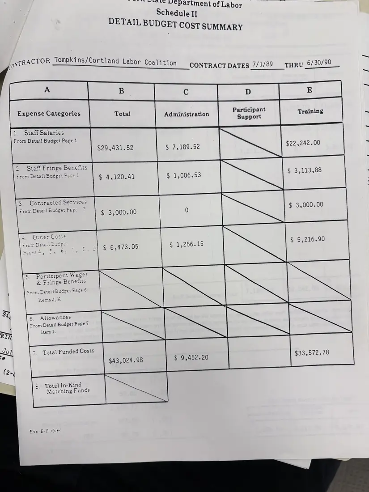
(open zoom view)Read the page text (machine-read, many errors)
This text was generated automatically from the photograph and has not been corrected. The image is the authoritative record.
Oe“ Pottimentofliahor. 2)... 2. Schedule I] a ETAIL BUDGET COST SUMMARY Qn R: mpkin ( ‘acl has AC TOR To s/ 10) and Labor Coalition eS: ae $ 4,120.41 @ I @WGc'ss Pesca § 3,113,85 $ 3,000.00 0 Ce ¢ 3,000.00 $ 6,473.05 $ 1,256.15 a $ 5,216.90 Expense Categories i. Staff Salaries From Detail Budget Page 1 Staff Fringe Benefits Ueonite ceo Semaces Frorr. Detail Bucge? Fees Parucipant Wages & Fringe Benefits From, Dev2i] Bucee* Pece € liems J, 4K Allowances rom Detail Budget Page zi Item L = Total Funded Costs $43,024.98 $ 9,452.20 &. Total In-Kind Matching Funcs Exe. Bell 19-€¢

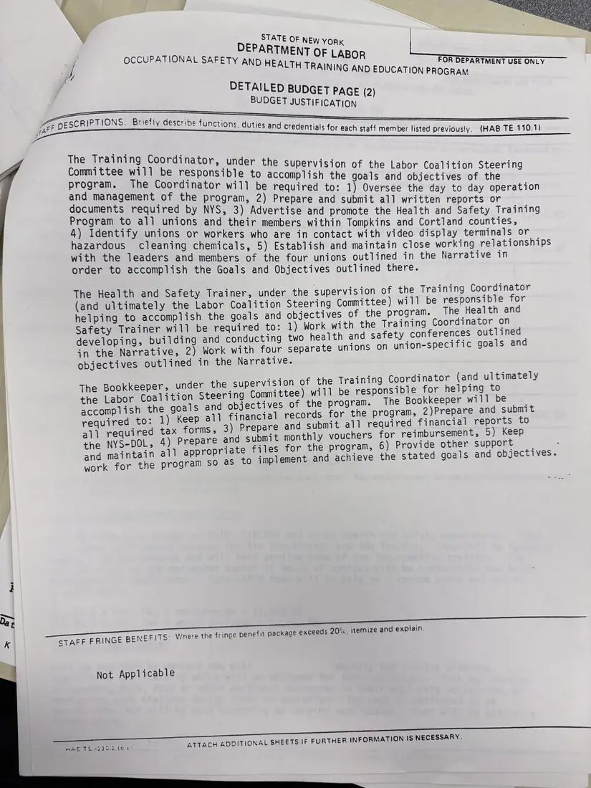
(open zoom view)Read the page text (machine-read, mostly readable)
This text was generated automatically from the photograph and has not been corrected. The image is the authoritative record.
a a Dai STATE OF NE | DEPARTMENT OF La / OCCUPATIONA NT OF LAB / L SAFETY AND HEALTH TRAIN a FOR DEPARTMENT USE J ING AND EDUCATION PR ee DETAI OGRAM LED BUDGET PA BUDGET JUSTIFICATION ih DESCRIPTIONS: Briefly describe f sare unctions, duties and credentials for each staff member listed previously. (HAB TE 110.1) M6 G The Training Coordinato : ; Ys under the s ic] cei eae eee responsible to Fecountish tha artes Se Coalition Steering . e i : and obj i andiiehaganent peceh cree, Will be required to: 1) Oversee cheeddy_ to mserition documents required b ey 2) Prepare and submit all written reports or programe Fide » 3) Advertise and promote the Health and Safety Training Aymldentisygunions . eoeels members within Tompkins and Cortland counties, hacartouc ers who are in contact with video display terminals or cleaning chemicals, 5) Establi intai i i i : ish and maintain close working relationships a leaders and members of the four unions outlined in the Narrative in © accomplish the Goals and Objectives outlined there. The Health and Safety Trainer, under the supervision of the Training Coordinator (and ultimately the Labor Coalition Steering Committee) will be responsible for helping to accomplish the goals and objectives of the program. The Health and Safety Trainer will be required to: 1) Work with the Training Coordinator on developing, building and conducting two health and safety conferences outlined in the Narrative, 2) Work with four separate unions on union-specific goals and objectives outlined in the Narrative. The Bookkeeper, under the supervision of the Training Coordinator (and ultimately the Labor Coalition Steering Committee) will be responsible for helping to accomplish the goals and objectives of the program. The Bookkeeper will be required to: 1) Keep all financial records for the program, 2)Prepare and submit all required tax forms, 3) Prepare and submit all required financial reports to the NYS-DOL, 4) Prepare and submit monthly vouchers for reimbursement, 5) Keep and maintain all appropriate files for the program, 6) Provide other support i work for the program so as to implement and achieve the stated goals and objectives. /\ %., itemize and explain. STAFF FRINGE BENEFITS: Where the fringe benefit package exceeds 20 Not Applicable MAE TE -116.2 (6-¢* ATTACH ADDITIONAL SHEETS IF FURTHER INFORMATION IS NECESSARY.

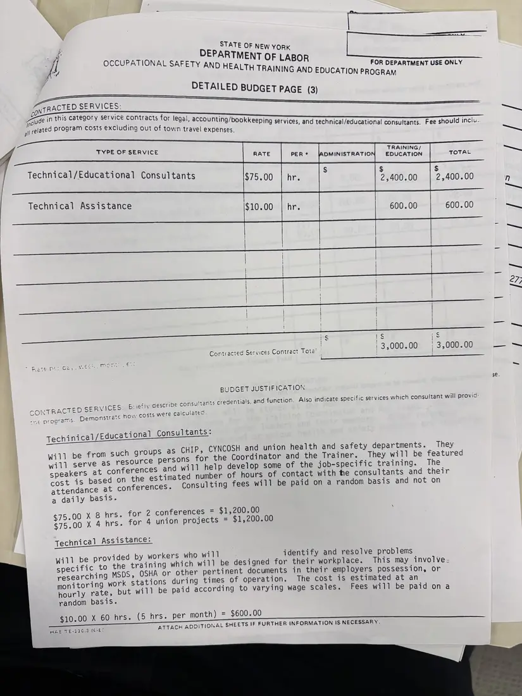
(open zoom view)Read the page text (machine-read, contains errors)
This text was generated automatically from the photograph and has not been corrected. The image is the authoritative record.
vee ij STATE OF NEW YOR o; DEPARTMENT OF LA OCCUPATIONAL SAFETY OF LABOR F A AND HEALTH TRAINING AND EDUCATION PROGRAM DETAILED BUDGET PAGE (3) TRACTED SERVICES: in this category service contracts f F i ; ppolude ts Tor legal, accounting/bookkeeping services, and technical/educational hould incl il related program Costs excluding out of town travel expenses GH ec ie el I TYPE OF SERVICE TRAINING/ ADMINISTRATIO EDUCATION $75.00 | hr. TOTAL Technical/Educational Consultants 2,400.00 2,400.00 Technical Assistance $10.00 | hr. 600.00 600.00 f G is Contracted Services Contrect Tote! | 3,000.00 3,000.00 Wee eee EE BUDGET JUSTIFICATION ee De credentials, and function. Also indicate specific services which consultant will provid: CONTRACTED SERMIGCES Bpalei ace ae at fv caiculatec. 6 programs Demonstreve how costs were caicula Techinical/Educational Consultants: ‘ ch groups as CHIP, CYNCOSH and union health and safety departments. They mn be from ee csource persons for the Coordinator and the Trainer. They will be featured ei akers at conferences and will help develop some of the job-specific training. The pas ig based on the estimated number of hours of contact with he consultants and their ne aenee at conferences. Consulting fees will be paid on a random basis and not on j a daily basis. .00 X 8 hrs. for 2 conferences = $1,200.00 \ | al ap xX 4 hrs. for 4 union projects = $1,200.00 Technical Assistance: Will be provided by workers who will : identify and resolve problems — specific to the training which will be designed for their workplace. This may involve- researching MSDS, OSHA or other pertinent documents in their employers possession, or monitoring work stations during times of operation. The cost is estimated at an hourly rate, but will be paid according to varying wage scales. Fees will be paid ona random basis. $10.00 X 60 hrs. (5 hrs. per month) = $600.00 MES E-11C-o(t-£~ ATTACH ADDITIONAL SHEETS IF FURTHER INFORMATION IS NECESSARY.

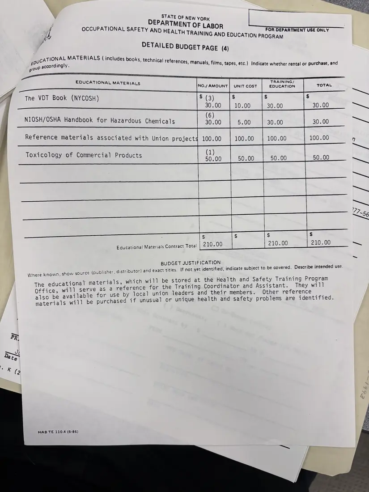
(open zoom view)Read the page text (machine-read, mostly readable)
This text was generated automatically from the photograph and has not been corrected. The image is the authoritative record.
Vv STATE OF NEW Yor DEPARTMENT OF LABOR : OCCUPATIONAL ys, SAFETY AND HEALTH TRAINING AND EQUCATIONTR FOR DEPARTMENT USE ONLY f OGRAM DETAILED BUDGET PAGE (4) T ON A M ERI LS ( i Cludes books techn Cal refer: n f ndicate whether rental or purc A | ATERIA in ’ ical m. m | a etere ces, anuals, il $, tapes, etc,) Indi | : EDUCATIONAL M ae aie 7 TRAINING — The VDT Book (NYCOSH) s $ : 30.00 | 10.00 30.00 30.00 NIOSH/OSHA Handbook for Hazardous Chemicals 30.00 30.00 30.00 Reference materials associated with Union projects 100.00 | 100.00 | 100.00 100.00 Toxicology of Commercial Products ae ; .00 50.00 50.00 210.00 210.00 Educational Materials Contract Total 210.00 BUDGET JUSTIFICATION n, show source (publisher, distributor) and exact titles. lf not yet identified, i The educational materials, which will be stored at the Health and Safety Training Program Office, will serve as a reference for the Training Coordinator and Assistant. They will also be available for use by local union leaders and their members. Other reference materials will be purchased if unusual or unique health and safety problems are identified. Where know ndicate subject to be covered. Describe intended use. (eae HAB TE 110.4 (6-86) eal Asi ee [OF | Ich
See something wrong, or recognize a person or event? Send a correction. If you hold rights in this item or think it should not be public, write to the same address.